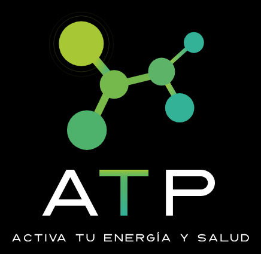

Términos y Condiciones de Uso
Versión 1.1 · 23 de agosto de 2026
Esto es lo que aceptas al suscribirte a ATP. Está escrito para que se entienda, no para esconder nada. Si algo aquí no te queda claro, escríbenos antes de pagar, no después.
1. Aceptación y quién presta el servicio
Estos Términos y Condiciones (los "Términos") rigen el uso de la aplicación y del sitio web ATP, operados por Enrique Zapata Ezquerro, persona física con actividad empresarial, RFC ZAEE900718DG9 ("ATP", "nosotros"), con domicilio en Circuito Petirrojo 129, Zibatá, El Marqués, Querétaro, México, C.P. 76269 y contacto hola@somosatp.com.
Al crear una cuenta, suscribirte o usar ATP, aceptas estos Términos y nuestro Aviso de Privacidad. Si no estás de acuerdo, no uses el servicio.
2. Qué es ATP, y qué no es. Aviso médico
ATP es una aplicación de bienestar, educación y estilo de vida. ATP no es medicina para enfermos: es una herramienta de optimización, autoconocimiento y rendimiento. No diagnostica ni trata enfermedades. Te ayuda a entender y optimizar tu cuerpo, y a llegar mejor preparado a tu médico. Si tienes una condición de salud, ATP trabaja junto a tu médico, no en su lugar.
ATP no es un dispositivo médico. No diagnostica, no trata, no cura ni previene ninguna enfermedad. La información, evaluaciones, sugerencias, rutinas y contenidos generados por ATP y por su asistente de inteligencia artificial ARGOS son de carácter exclusivamente educativo y no sustituyen la consulta, diagnóstico o tratamiento de un profesional de la salud con cédula.
La "Edad ATP" y todos los indicadores del producto son estimaciones educativas basadas en la información que tú aportas. No constituyen un diagnóstico médico ni una promesa de resultados.
Antes de iniciar cualquier programa nutricional, de ejercicio, ayuno, exposición a frío o calor, respiración o suplementación, consulta con tu médico, especialmente si tienes condiciones preexistentes, tomas medicamentos, tienes antecedentes cardiacos, epilepsia, o estás embarazada o en lactancia.
Situaciones de emergencia: ATP no es un servicio de urgencias ni de atención en crisis. Si presentas una emergencia médica o de salud mental, llama de inmediato a los servicios de emergencia (911) o a la Línea de la Vida: 800 911 2000, disponible las 24 horas y sin costo.
3. Elegibilidad
Debes ser mayor de 18 años para usar ATP. Al registrarte, confirmas que cumples este requisito.
4. Tu cuenta
Eres responsable de la veracidad de la información que aportas y de mantener la confidencialidad de tus credenciales. La calidad de tus estimaciones y de tu contenido depende de la exactitud de los datos que ingresas.
5. Membresía, precios y pagos
ATP ofrece una sola membresía, sin niveles ni versiones distintas: todas las funciones están incluidas para toda persona miembro. Los precios vigentes se muestran en la página de contratación y dentro de la aplicación, siempre en pesos mexicanos (MXN) e incluyendo los impuestos aplicables.
Precios de lanzamiento y precio congelado: durante el lanzamiento, ATP ofrece precios promocionales por ventanas de tiempo limitadas, anunciados con su fecha de término. El precio que contratas al suscribirte se conserva mientras tu suscripción permanezca activa e ininterrumpida, aunque el precio de lista aumente después. Si cancelas y decides volver más adelante, tu reingreso se hará al precio vigente en ese momento, no al precio promocional original.
Los pagos se procesan mediante Stripe (pagos web), App Store (Apple) o Google Play. Al suscribirte autorizas el cargo recurrente correspondiente.
Renovación automática: la membresía se renueva automáticamente al final de cada periodo, al precio que contrataste. Te notificaremos antes de cada renovación, indicando monto y fecha. Puedes cancelar la renovación en cualquier momento y sin penalización desde el portal de suscripción que te enviamos por correo, o desde la gestión de suscripciones de App Store o Google Play si compraste ahí. La cancelación surte efecto al final del periodo ya pagado; conservas el acceso hasta entonces.
Cobros fallidos: si un cobro no puede procesarse, se realizarán reintentos automáticos durante un periodo de hasta dos semanas y te lo notificaremos. Si al término de ese periodo el cobro sigue sin completarse, la membresía se suspende.
Garantía de siete días: si cancelas dentro de los siete días naturales siguientes a tu primer pago, te devolvemos el importe completo sin preguntarte nada. Basta con que lo solicites a hola@somosatp.com desde el correo con el que contrataste. La devolución se procesa por la misma vía del pago y puede tardar hasta diez días hábiles en reflejarse, según tu banco. Esta garantía aplica una sola vez por persona y cubre el primer pago de tu membresía.
Reembolsos fuera de esa garantía: los pagos ya realizados no son reembolsables, salvo obligación legal expresa. Los reembolsos de compras realizadas en App Store o Google Play se rigen adicionalmente por las políticas de dichas tiendas. Lo anterior no limita los derechos irrenunciables que la Ley Federal de Protección al Consumidor te otorga.
6. Uso aceptable
No debes: usar ATP para fines ilícitos; suplantar identidad; extraer datos masivamente; intentar vulnerar la seguridad; ni revender o redistribuir el contenido sin autorización. Podemos suspender cuentas que violen estos Términos.
7. Propiedad intelectual
Todo el contenido, marcas ("ATP", "ARGOS", "Edad ATP", "ATP Functional Score"), algoritmos, textos, diseños y software son propiedad de ATP o de sus licenciantes. Se te otorga una licencia limitada, personal, no exclusiva e intransferible para usar el servicio conforme a estos Términos. Conservas la titularidad de los datos que tú aportas.
8. Contenido de terceros y evaluaciones de productos
El ATP Functional Score es una evaluación educativa y propietaria basada en criterios objetivos y públicos sobre las características y fórmula de un producto. No constituye recomendación médica ni juicio sobre marcas comerciales específicas. La metodología está disponible públicamente. Las referencias científicas citadas en el contenido educativo remiten a estudios de terceros; ATP no es responsable de la disponibilidad ni exactitud de fuentes externas.
9. Limitación de responsabilidad
En la máxima medida permitida por la legislación mexicana, la responsabilidad de ATP frente al usuario por cualquier reclamación relacionada con el servicio se limita al monto pagado por el usuario en los 12 meses previos al hecho que origine la reclamación.
Nada en estos Términos limita la responsabilidad de ATP por dolo o negligencia grave, ni los derechos irrenunciables que la Ley Federal de Protección al Consumidor otorga al consumidor.
El usuario reconoce que las intervenciones de estilo de vida (ayuno, ejercicio, exposición a frío o calor, respiración, suplementación) conllevan riesgos inherentes, que ha sido advertido de consultarlas con su médico, y que las realiza bajo su propia decisión y responsabilidad.
10. Prácticas de mayor exigencia y asunción de riesgo
ATP pone a tu disposición prácticas de bienestar que, por su naturaleza, requieren precauciones especiales, incluyendo entre otras: respiración intensa (hiperventilación controlada), apneas, exposición a frío (inmersión, duchas frías), exposición a calor (sauna) y ayuno prolongado. Estas prácticas conllevan riesgos inherentes que pueden incluir mareo, pérdida de conciencia, y en circunstancias extremas, lesiones graves.
Antes de iniciar cualquiera de estas prácticas, ATP te solicita confirmar de manera expresa y por escrito, cada vez que aplica, que te encuentras en condiciones seguras y sin contraindicaciones. Al confirmar dichas afirmaciones, reconoces que la información es veraz, que comprendes los riesgos, que realizas la práctica por tu propia decisión y bajo tu responsabilidad, y que asumes voluntariamente los riesgos inherentes.
Estas prácticas son de carácter educativo y de bienestar; no constituyen tratamiento médico ni prescripción. No las inicies sin consultar a tu médico si tienes condiciones preexistentes. En caso de embarazo, lactancia u otras condiciones de riesgo declaradas, ATP bloquea automáticamente el acceso a determinadas prácticas por tu seguridad.
11. Indemnización
Te obligas a mantener en paz y a salvo a ATP frente a reclamaciones de terceros derivadas de: (i) información falsa o inexacta que aportes; (ii) uso indebido del servicio; o (iii) incumplimiento de estos Términos.
12. Modificaciones a los Términos
Podemos modificar estos Términos notificándote con al menos 30 días de anticipación por correo o dentro de la app. Si no aceptas los cambios, puedes cancelar sin penalización antes de su entrada en vigor y solicitar el reembolso proporcional del periodo no utilizado, cuando aplique.
13. Terminación
Puedes cancelar tu suscripción en cualquier momento desde el portal de suscripción, y tu cuenta desde Perfil, Privacidad, dentro de la aplicación. Podemos suspender o terminar tu acceso si violas estos Términos, notificándote cuando sea legalmente posible.
14. Ley aplicable y jurisdicción
Estos Términos se rigen por las leyes de los Estados Unidos Mexicanos. Para cualquier controversia, el consumidor podrá acudir, a su elección, ante la Procuraduría Federal del Consumidor (PROFECO), incluida la plataforma Concilianet, o ante los tribunales competentes de la ciudad de Querétaro, Querétaro.
15. Contacto
Dudas sobre estos Términos: hola@somosatp.com · Privacidad y datos: privacidad@somosatp.com
Este documento está siempre disponible en somosatp.com/terminos.html.
También puedes leer el Aviso de Privacidad.
Dudas: hola@somosatp.com · Privacidad y datos: privacidad@somosatp.com